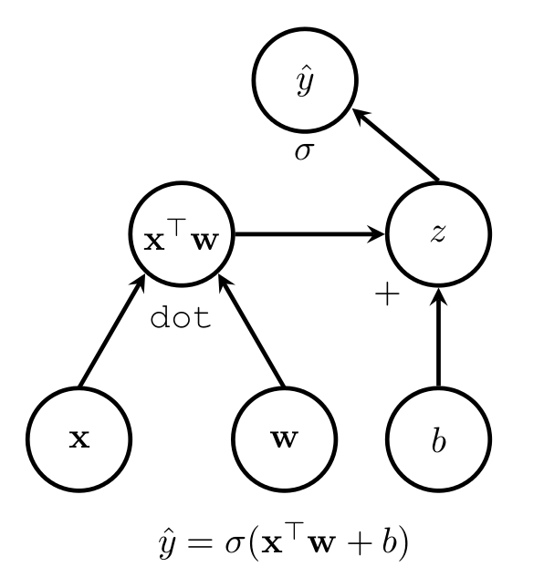

Machine Learning and Neural Networks
Roberto Santana
Department of Computer Science and Artificial Intelligence
University of the Basque Country
Neural Networks. Mathematical background
TensorFlow
Characteristics
- A machine learning system that operates at large scale and in heterogeneous environments.
- Supports large-scale training and inference.
- Uses dataflow graphs to represent computation, shared state, and the operations that mutate that state.
- Proposed and extensively used by Google.
M. Abadi et al. Tensorflow: Large-scale machine learning on heterogeneous distributed systems. arXiv preprint arXiv:1603.04467. 2016.
P. Goldsborough A Tour of Tensorflow. arXiv preprint arXiv:1610.01178. 2016.
TensorFlow
Components
- Sessions: A special environment for the execution of operations and evaluation of tensors. They also encapsulate the allocation and management of resources.
- Operations: Can be a mathematical equation, a variable, a control flow directive, etc. Represented as nodes of the computational graph.
- Tensors: A multi-dimensional collection of homogeneous values with a fixed, static type. Represented as edges.
- Variables: Persistent, mutable handles to in memory buffers storing tensors.
- Computation graph: Persistent, mutable handles to in memory buffers storing tensors.
TensorFlow
Examples
import tensorflow as tf
c1 = tf.constant(10)
c2 = tf.constant(5)
mat1 = tf.constant([[4., 3.]])
mat2 = tf.constant([[1., 5.]])
mat_product = tf.matmul(mat1, mat2)
with tf.Session() as sess:
result = sess.run(mat_product)
sess.run(c1)
sess.run(c2)
sum = sess.run(c1+c2)
print(c1,c2,result,sum)
TensorFlow
Computation graphs
Computation graph for the addition of two variables \(c1\) and \(c2\).

Each node represents an operation which is express the combination or transformation of data.
Edges represent data flowing between operations .
In a typical situation, the graph of a machine learning model is. executed from start to end multiple times.
.
TensorFlow
Computation graphs
Example of a graph for computing a logistic regression variable \( \hat{y} \) for some example vector \(x\), weight vector \(w\), as well as a scalar \(b\).

\( \hat{y} \) is the result of the sigmoid or logistic function \(\sigma\).
P. Goldsborough A Tour of Tensorflow. arXiv preprint arXiv:1610.01178. 2016.